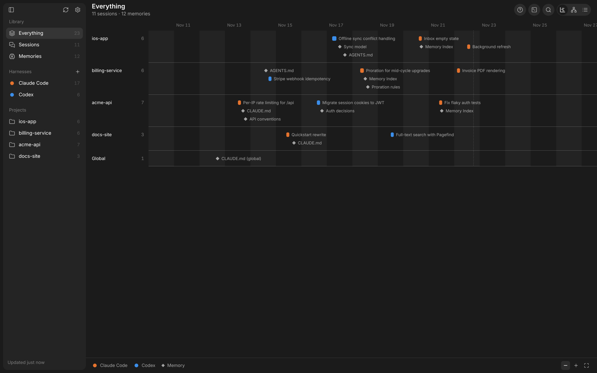

Wefty / memory and sessions for coding agents
Every agent session.
All in one place.
See and edit what Claude Code, Codex, Cursor, and opencode already keep on disk. When one agent hits its limit, another picks the work up, straight from the transcript.
Free and open source · Apache-2.0 · latest release
Claude CodeCodexCursormemory
Live: watch a lane hit its limit and carry on in another agent.
01 / Look
Three ways to look. One library.
Wefty reads the transcripts, memory files, and project context your agents leave behind, and lays them out by project and time.

02 / Hand off
When one agent stops, another picks up.
- Open the session.It's already in the library. Wefty watches the agents' folders.
- Continue in another agent.One click in the session's menu. Claude Code to Codex, or back.
- Keep going.Wefty writes a Markdown brief from the transcript and starts the next agent in your project, in its built-in terminal.
# Handoff: Proration for mid-cycle upgrades - Harness: Claude Code · Branch: main - Project: ~/code/billing-service ## Goal (first request) > Add proration when a customer upgrades > mid billing cycle. ## Open threads - Review edge cases - Update the docs ## Files touched (3) - src/billing/proration.ts - src/billing/invoice.ts - test/proration.test.ts
Your repository is never touched: no handoff file, no commit, no branch. Nothing to prepare before you hit a limit.
03 / Under the hood
It reads what's already there.
Claude Code
Codex
Cursor
opencode
Edit memory in placeFix a wrong line in CLAUDE.md or a memory file, and every agent that reads it gets the fix.
See what touched whatA graph links sessions to the memories they read or wrote, across projects.
A terminal insideResume any session in its own folder, or drop a path at the prompt. Nothing runs until you press Enter.
Local onlyNo account, no telemetry, no sync. It reads and writes your local files and nothing else.
04 / Get it
Keep building when your agent can't.
For macOS on Apple Silicon, Windows 10 and 11, and Linux (AppImage or .deb). Builds are unsigned while Wefty is in alpha, so your OS will ask once before opening it.